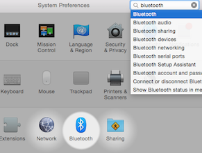

3. Ligue o Bluetooth
Em seu computador, verifique se sua conexão bluetooth está ativa. Você pode acessar essa configuração em Preferências do sistema > Bluetooth.

Não consegue encontrar o Bluetooth? Veja a guia de Solução de problemas Em seguida, clique em 'Conectar'